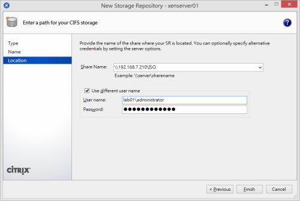

企業開源 XenServer 基礎建置與管理

作者簡介：顧武雄， Microsoft MVP、MCITP與MCTS認證專家、台灣微軟Technet、Tech Day、Webcast、MVA特約資深顧問講師。目前個人Linux著作有Linux企業現場應用系統、Linux私有雲社群網路現場實戰。
引言：如今在企業IT市場中，堪稱能夠與VMware以及Microsoft虛擬化平台技術並駕齊驅的，恐怕只有同樣是老牌子的Citrix XenServer了。因為它不僅兼具高效能、高穩定、高可用性以及最高安全設計之外，更令人讚嘆的是它還是一個Linux核心下的開放原始碼套件。在您準備為公司資訊作業環境，進行全面虛擬化的規劃與導入之前，強烈建議您不妨先參考一下本文的精闢介紹與實戰講解，並完成最新免費XenServer版本的下載與建置評估，再來決定誰是最後入主私有雲的虛擬化基礎平台。
簡介
前一陣子筆者到一家汽車零件公司協助他們IT部門導入協同作業平台，赫然發現此公司大部分的重要伺服器應用系統，皆是部署在以Citrix XenServer為主的虛擬化平台之上，其中的Guest OS也包括了數種版本的Windows Server以及Linux系列的作業系統。
我好奇的問負責的IT人員，為何會選擇使用開源的XenServer，來做為企業私有雲的基礎平台，而不是選用像是VMware的vSphere或是Microsoft 的Hyper-v呢，他只回答：「穩定、簡單、好用」。究竟Citrix開源的XenServer虛擬化平台解決方案，有哪一些吸引人的架構設計，讓如今許多的企業IT單位，仍舊選擇使用它，來建構這錯綜複雜的雲端運算環境呢？
XenServer是知名Citrix公司所推出的一款伺服器虛擬化平台，打從2013年6月左右，便加入了開放原始碼的行列，其核心基礎為Xen Project Hypervisor，這項裸機虛擬化技術提供了可運行在Intel與AMD x86硬體平台上的虛擬機器，有效徹底發揮接近於原生應用系統效能的作業程序，讓廣泛的Linux與Windows作業系統，能夠相容於它的虛擬作業環境並擁有如同在實體電腦主機的效能表現。
在如今私有雲端基礎虛擬化平台上的大量虛擬機器部署需求下，XenServer對於每一部系統的運行，在虛擬化硬體資源的配置支援上，首先在邏輯處理器支援部分就高達了160個，每一個Guest OS可以配置最多32個虛擬處理器(vCPU)，當然實際的配額量還得依照作業系統的版本支援來決定。網路部分則是支援了最多16個網路卡的連線，每一個虛擬機器可以配置最多7個網路介面，虛擬磁碟部分可以建立至多16個(包括虛擬DVD-ROM裝置)。而針對每一個Guest OS的記憶體支援則是最多192GB，
Citrix XenServer除了有開放原始碼的授權版本，可以供所有類型的使用者免費下載使用，也有提供須付費的授權版本，就功能特色層面來看，兩者的主要差異就在於免費的版本無法透過XenCenter管理介面，來進行自動化的安全修正程式更新、套件更新、臭蟲修復更新以及維護版本的更新。簡單來說，盡管免費版本的XenCenter，也可以透過XenCenter來進行多主機的集中控管，但卻無法進行補強套件的更新管理。
請注意！XenServer 6.5的架構設計是基於Xen Project Hypervisor v4.4。而最新版本的Xen Project Hypervisor v4.6，則預計在2015年9月左右發行。有關這方面的相關資訊，您可以從https://www.xenproject.org/官方網站得知。
XenServer與Xen Project Hypervisor有何差異？
雖然Citrix XenServer是基於Xen Project Hypervisor核心技術所發展出來的解決方案，但兩者在功能與管理的能力仍然有很大的差別，這包括了XenServer提供了Windows桌面專用的VM圖形管理工具、控制網域(dom0)、建立多樣化的虛擬機器範本功能、支援廣泛的儲存裝置整合功能、進階高效能的Tapdisk3儲存技術、支援透過Open Virtual Switch來建立軟體定義網路(SDN)、vGPU功能、以資源集區管理機制簡化從主機、儲存設備到網路資源的配置管理、提供企業等級的服務支援。
如圖1所示關於最新開源XenServer映像檔與XenCenter安裝程式、修正程式，您可以到下列官方網站下載：
https://xenserver.org/open-source-virtualization-download.html

▲圖1 開源XenServer下載
XenServer主機系統需求
XenServer必須建置在以Intel或AMD為基礎的x86之64位元主機上，並且最多可以使用到1TB的實體記憶體、16個網路介面卡以及160個邏輯處理器，其中邏輯處理器最大數量的支援程度，則是根據不同的CPU型號來決定，這部分詳細資訊可以參考XenServer HCL的網頁。至於其它硬體規格的要求，可以參照以下說明。
- 處理器(CPU)：請採用64bit的x86 CPU，至少1.5GHZ以上。2GHZ以上的多核心處理器則是建議配備。
- 記憶體(RAM)：2GB為最小記憶體要求，建議安裝4GB以上的記憶體，以供更多的虛擬機器分配使用。
- 磁碟空間(Disk Space)：可使用連接於本機中的各類儲存裝置，包括了PATA、SATA、SCSI等等，其容量16GB為最小要求，60GB以上的可用空間則是建議。至於其它透過像是SAN或HBA卡所連接的儲存設備，也同樣是支援的。
- 網路卡(NIC)：至少使用100Mbit/s以上的網路卡，採用多個Gigabit網路卡則是建議的。值得注意的是高速網路連線，將有助於往後進行實體轉虛擬化(P2V)、各類資料的匯入與匯出之傳輸、虛擬機器的線上移轉(Live Migration)等運行效能之提升。
在接下來有關XenServer的安裝設定講解，將以6.2的版本來作為示範。緊接著則會講解如何將它升級成最新的6.5版本，以及完成最新補強更新套件的下載與安裝。
基礎安裝操作指引
關於XenServer的安裝設定是相當容易的，您可以選擇直接將它安裝在實體的主機上，並且啟用BIOS的處理器進階設定中，有關於虛擬化技術的功能支援。如果是在測試階段，則可以考慮將它安裝在一部高效能的VMware Workstation 10以上的新虛擬機器之中。如圖2所示便是使用官方網站上所下載的XenServer映像檔開機後的啟動畫面。直接按下[Enter]便可以開始進行安裝。若是按下[F1]鍵將會以標準模式啟動，[F2]鍵是以進階模式啟動，[F3]鍵是以XCP模式啟動。
▲圖2 XenServer 6.2開機安裝選單
XenServer 6.2安裝的第一項設定就是如圖3所示的鍵盤配置，在此請選擇預設的[qwerty us]即可。點選[OK]繼續。值得注意的是上方的版本序號，將會隨著後續的更新程式安裝而改變，也可以從XenCenter圖形介面或命令工具的管理中來查詢，有助於確認目前版本的最新更新狀態。
▲圖3 鍵盤配置設定
在如圖4所示的頁面中，系統將會警告我們本次的作業無論是全新安裝、升級或是還原您的備份，都將會導致現有的系統與資料遭到清除，因此建議您如果目前已經有現有的系統與資料在本機硬碟之中，最好能夠先行完成備份會比較妥當。點選[Reboot]可以立即重新開機，若是按下[F9]鍵則可以為本系統載入其他裝置的的驅動程式(例如：RAID Card)。點選[OK]繼續往下安裝。
▲圖4 安裝注意事項
在如圖5所示的頁面中，必須點選[Accept EULA]按鈕來同意相關的版權聲明，才能夠往下繼續安裝。
▲圖5 版權聲明
如果在接下來的步驟之中出現了如圖6所示的[System Hardware]頁面訊息，即表示您目前尚未將實體主機中的BIOS設定，啟用處理器進階設定中的虛擬化技術相關功能，當然也有可能是這部主機的處理器，根本沒有提供虛擬化技術的功能。盡管能可以點選[OK]繼續完成安裝，但後續將會有許多Windows類型的虛擬機器無法建立。
▲圖6 系統硬體問題提示
至於如果您是選擇將XenServer安裝在VMware系列的虛擬機器之中，來形成了所謂的巢狀(nested)虛擬平台測試架構，在這種情況之下除了需要實體主機BIOS的CPU組態，有啟用了虛擬化技術的功能之外，還必確認已經在如圖所示的[Virtual Machine Settings]頁面中，也已經啟用了[Virtualize Intel VT-x/EPT or AMD-V/RVI]功能設定，才可以讓後續的64bit虛擬機器正常建立與啟動。必須注意的是此設定的異動，僅能夠在此虛擬機器關機的狀態下才能夠進行。
▲圖7 VMware Workstation虛擬機器設定
在如圖8所示的[Virtual Machine Storage]頁面中，可以看到目前所有已連接在本機的磁碟，在此我們只有一顆內接的硬碟來做為XenServer的系統使用，等到後續完成安裝之後，仍可以繼續從XenCenter管理介面中，來加入更多的本地硬碟或遠端儲存區，來做為虛擬機器或備份等用途。在此建議您將其中的[Enable thin provisioning]功能選取，如此將可以讓未來有關XenDesktop的應用在資料的儲存效能上獲得最佳化。點選[OK]繼續。
▲圖8 虛擬機器儲存裝置設定
請注意！整個XenServer的安裝過程之中，系統將會自動建立兩個4GB的磁碟分割區，來供Control Domain功能使用。
在如圖9所示的[Select installation Source]頁面中，請選擇安裝的媒體來源，它雖然可以選擇採HTTP、FTP以及NFS的連線安裝方式，但終究無法像直接使用在本機中的ISO或DVD光碟安裝來的迅速，因請選取[Local media]並點選[OK]繼續。
▲圖9 安裝媒體來源選擇
在如圖10所示的[Supplemental Packs]頁面，可以決定是否要連同補充的套件一併安裝，在此除非我們有買付費授權的商用版，才能夠到Citrix官方網站上進行下載。點選[No]繼續。
▲圖10 補充套件安裝提示
在如圖11所示的[Verify Installation Source]頁面中，可以決定是否要針對目前的安裝媒體進行檢查，以確保安裝過程之中不會發生錯誤。一般來說如果我們所準備的是DVD安裝光碟，最好能讓它執行來源程式的檢查，畢竟光碟的燒錄有時候仍會發生挑片的問題，至於如果準備的是ISO映像檔，則直接選取[Skip verification]並點選[OK]繼續。
▲圖11 安裝來源檢驗
在如圖12所示的[Set Password]頁面中，必須設定系統預設的root管理員帳戶密碼，且這個密碼絕對不能夠忘記，因為後續無論是在伺服端的命令主控台，還是經由前端XenCenter的連線管理，都是需要使用它來進行首次的登入管理，以及藉由他來建立更多不同權限層級的管理員角色。
請注意！密碼的輸入必須自少六個字元以上，而且最好能過包含三種以上不同的元素，以確保密碼可能遭到破解的風險。
▲圖12 預設管理員密碼設定
在如圖13所示的[Networking]頁面中，必須決定此XenServer的TCP/IP位址設定。一般來說都是自行手動輸入一組可用的靜態IP位址配置(Static)，包括了子網路遮罩與閘道位址。不過如果後續連線XenServer的管理方式，將全面採用完整網域名稱的連線方式，則採用預設的動態位址配置方式(DHCP)，其實也是無妨的。無論如何相關網路位址的配置，後續在完成安裝之後，仍是可以進行修改的。點選[OK]繼續。
▲圖13 網路位址配置
在如圖14所示的[Hostname and DNS Configuration]頁面中，必須設定此XenServer的主機名稱，以及DNS Server的連線位址。一般來說第一步的DNS Server都是輸入內部的DNS Server位址，至於第二部則可以輸入外部的DNS Server位址，像是Google的8.8.8.8或Hinet的168.95.1.1。此外也請記得在DNS服務中加入此主機的A記錄。
▲圖14 主機名稱與DNS位址設定
在如圖15所示的[Select Time Zone]頁面中，必須選取此主機所在地理位置，請按下A鍵，然後找到[Asia]並選取，點選[OK]繼續
▲圖15 時區設定
緊接著在如圖16所示的頁面中，就必須選取主機所在城市，在台灣請選取[Taipei]。點選[OK]繼續。
▲圖16 時區城市選擇
在如圖17所示的[Time]頁面中，請選擇設定主機系統時間的方式，在此可以選擇透過網際網路的NTP伺服器，來進行時間的自動校對，或是選擇[Manual time entry]項目，來以手動方式來完成時間設定。
▲圖17 選擇本地時間設定方式
在如圖18所示的[NTP Configuration]頁面中，便是選擇以指定的NTP伺服器來進行系統時間的校對。在此最多可以輸入三組的NTP伺服器位址，在台灣您可以輸入tw.pool.ntp.org即可。點選[OK]繼續。
請注意！關於亞洲地區的NTP主機清單，您可以連線到下列網址進行查詢即可
https://www.pool.ntp.org/zone/asia
▲圖18 NTP伺服器位址設定
在如圖19所示的[Confirm Installation]頁面中，將完成最後的安裝確認。一旦點選[Install XenServer]按鈕後將開始進行安裝，點選[Back]則可以回到前面的所有步驟中進行各項設定值的修改。
▲圖19 安裝確認
在如圖20所示的[New Media]頁面中，如果提示您放入補充包套件，即表示在安裝設定的過程中您有選擇要安裝補充包套件，如果目前並沒有此套件的安裝媒體，點選[Skip]來略過即可。
▲圖20 補充套件安裝
在如圖21所示的[Installation Complete]頁面中，便可以看到成功完成安裝的訊息，請移除安裝媒體，點選[OK]之後將會重新開機即可。
▲圖21 成功安裝完成
成功完成安裝與重新啟動之後，將會來到如圖22所示的XenServer命令管理主控台(Console)。此主控台可以協助管理人員，完成許多平日常用的伺服端管理作業，包括網路介面卡的連線設定、驗證設定、虛擬機器基礎管理、磁碟與儲存區管理、資源集區設定、硬體規格與BIOS資訊查詢、鍵盤配置與時區設定、遠端服務設定、備份與還原以及更新管理、關機管理以及開啟本機命令介面等等。在預設的[Status Display]頁面中，便可以檢視到目前的主機類型、XenServer的版本編號以及網路卡的TCP/IP位址資訊等等。
▲圖22 XenServer命令管理主控台
當我們從XenServer管理主控台選擇進入到[Local Command Shell]功能之後，系統將會詢問預設的root帳戶密碼，驗證通過之後便會開啟如圖23所示的命令提示介面。在此您可以嘗試下達uname –a命令來查看Linux Kernel的版本資訊，以及下達cat /etc/issue命令來查看其它關於XenServer的提示資訊。最後您還可以下達lsb_release –a命令，來進一步查看更完整的XenServer系統版本資訊。
▲圖23 XenServer命令提示介面
系統升級操作指引
一般Linux系列的作業系統(例如:CentOS)對於小版本的更動都比較沒有問題(例如1.0升級1.1)，但是如果遇到的是大版本的更新(例如1.0升級2.0)，通常容易狀況百出導致系統就地升級失敗。但根據筆者的了解同樣是以Linux核心為基礎的XenServer，比較沒有這方面的升級問題。
然而相較於前一版的XenServer 6.2，最新發行的XenServer 6.5版本有哪一些過人之處呢？
- Linux Kernel已更新到3.10，Xen Project Hypervisor則是v4.4。其中Xen Project Hypervisor v4.4由於在針對Control Domain虛擬事件通道的支援數量已從原有的1023到了131071，因此無論是網路的傳輸效能還是磁碟的讀寫效能都已大幅提升。
- Open Virtual Switch(OVS)已更新到2.1.1版本，此版本除了修復許多安全性方面的漏洞之外，也大幅提升了網路資料的傳輸效能。
- Control Domain(dom0)已全面支援使用64bit作業環境，這意味著其運行的效能表現將大幅增長，因為它突破了原有32bit作業系統的4GB記憶體限制。
- 藉由最新的讀取快取(read caching)技術，大幅減少了IOPS的負載，進而提升資料存取的速度。
- 在Guest OS的類型與版本的支援上，陸續增加了Ubuntu14.04、CentOS 7、RHEL 7以及Oracle Linux 7等知名作業系統。
無論如何在我們動手升級現行的XenServer 6.2系統之前，最還是能夠先對於整個系統進行一次完整性的備份，並且將所有運行中的虛擬機器正常關機。接著便可以放入XenServer 6.5的安裝光碟來進行開機，完成啟動之後系統將會出現如圖24所示的提示訊息，這表示系統已經偵測到舊版的XenServer版本。您可以決定立即進行就地升級，或是完成一次全新的安裝。在此我們選擇前者。
請注意！如果您和筆者一樣是將XenServer安裝在VMware Workstation的虛擬機器之中，則必須在一開始啟動虛擬機器的時候，按下[F2]鍵來完成開機順序的調整，將虛擬的DVD光碟再一次設定為第一順位的開機裝置才可以。
▲圖24 XenServer升級安裝
緊接著會出現如圖25所示的提示訊息，這表示系統將會對於現行的XenServer系統進行備份，這個動作將會清除任何已經存在備份分割區中的資料。點選[Continue]繼續。
▲圖25 現行版本偵測
最後還會出現如圖26所示的確認訊息，一旦點選[Install XenServer]按鈕之後，現有的6.2.0-70446c版本，將會被最新的6.5版本所覆蓋，不過現有的虛擬機器會被安全保留，
▲圖26 最後升級提示
成功完成XenServer 6.2升級之6.5版本之後，一旦重新啟動來到如圖27所示的主控台視窗時，將可以看到目前的版本編號已變成了6.4.0-90233c。而其他原有的各項系統設定組態則不會遭到異動，包括了網路介面的設定資訊等等。
▲圖27 XenServer 6.5管理主控台
在XenServer 6.5可以同時運行多少個虛擬機器呢？
答案是以Windows為主的虛擬機器最多可高達500個，以PV Linux為主的虛擬機器則是650個，至於以HVM Linux為主的虛擬機器(包括了Ubuntu 14.04、RHEL 7、CentOS 7、Oracle Linux 7)則是支援至500個。
目前在Citrix的官方網站上也已推出了最新XenServer 6.5的修正程式，名稱為Hotfix XS65E001，這包括了伺服器端與XenCenter的更新程式。如圖28所示請在此網頁中，分別完成這兩支修正程式的下載。
▲圖28 Hotfix XS65E001下載
首先就來進行伺服端的修正更新。在完成下載xsupdate檔案之後請先將它解壓縮，然後開啟位在Windows用戶端電腦上的XenCenter，如圖29所示點選位在[Tools]下拉選單中的[Install Update]繼續。
▲圖29 XenCenter工具選單
接著在如圖30所示的[Install Update]頁面中，請到[Select Update]頁面中點選[Add]按鈕，來將xsupdate檔案完成上傳。成功上傳之後其狀態(Status)便會顯示為[Not applied]。點選[Next]繼續。
▲圖30 選取更新檔案
在如圖31所示的[Select Servers]頁面中，便可以批次選取所有想要進行更新的XenServer 6.5伺服器，範例中目前僅有一部伺服器。勾選後點選[Next]繼續。
▲圖31 選擇準備更新的伺服器
來到如圖32所示的[Prechecks]頁面中，將會進行主機相關的狀態檢查，這包括了儲存區連線狀態以及伺服端系統的運作狀態。確認全都通過檢查之後，點選[Next]繼續。
▲圖32 預先狀態檢查
在如圖33所示的[Update Mode]頁面中，可以進一步自訂更新模式的設定，在此我以預設的選項設定來完成更新即可，也就是在更新程式完成套用之後，便自動立即完成所有指定伺服器的更新作業。點選[Install update]開始安裝更新。成功完成更新後點選[Finish]即可。
▲圖33 更新模式選擇
關於XenCenter 6.5伺服端的更新方式，除了可以使用便利的XenCenter圖形管理工具來進行之外，也可以採用它內建專用的命令工具來完成。讓我們一同來學一下這種更新方法。
請在安裝有XenCenter管理工具的Windows作業系統上，以Windows 8.1為例請開啟命令提示列並切換到C:\Program Files (x86)\Citrix\XenCenter路徑下，請如圖34所示先使用下列命令與參數，來上傳xsupdate更新檔案至XenServer主機之中，而主機名稱的欄位可以輸入電腦名稱或IP位址。
xe patch-upload -s -u root -pw file-name=\XS65E001.xsupdate
接著必須配置更新程式至集區中所有的XenServer主機，其中uuid值便是上一個步驟執行所產生的識別字串。請注意！您所產生的識別字串和筆者範例中的應該是截然不同的。
xe -s -u root -pw patch-pool-apply uuid=9f9d57ff-3a04-4385-9744-f961b44a1db4
完成了更新程式的上傳與配置之後，如果想要檢查更新程式是否已經成功套用，只要下達以下命令與參數即可。
xe patch-list -s -u root -pw name-label=XS65E001
▲圖34 以命令工具更新XenServer
成功更新XenServer之後，如果在結果顯示的[after-apply-guidance]欄位中，出現了restartXAPI訊息，即表示您還必須執行xe-toolstack-restart命令，來重新啟動XAPI service，才能夠真正完成XenServer系統的更新作業。
XenCenter系統需求與安裝
XenCenter是XenServer在Windows下的主要圖形管理主控台，您可以透過它來部署各類的虛擬機器、資源集區管理、儲存區配置、安全性管理以及高可用架構的建置等等。下列為XenCenter安裝的系統需求。
- 作業系統：Windows 8/8.1、Windows 7 SP1、Windows Vista SP2、Windows Server 2012 R2、Windows Server 2012、Windows Server 2008 R2 SP1、Windows Server 2008 SP2、Windows Server 2003 SP2
- 前置軟體：.NET Framework 4
- 處理器(CPU)：至少750MHZ，建議採用1GHZ以上的處理器
- 記憶體(RAM)：至少1GB以上，建議2GB以上的記憶體
- 磁碟空間(Disk Space)：至少剩餘100MB以上可用空間
- 網路卡(NIC)：至少採用100Mbit/s以上速度的網路卡
- 螢幕解析度：至少1024x768 pixels
如圖35所示在整個XenCenter的安裝過程中，除了可以自訂安裝路徑之外，並沒有其它特別需要注意的地方。
▲圖35 XenCenter安裝
若是您的XenServer已經從6.2升級到了6.5的版本，那麼位在Windows 8.1作業系統中的XenCenter，除了同樣需要更新至6.5版本之外，也務必下載與執行最新的XenServer-6.5.0-XenCenterSetup.exe更新程式，否則可能會發生無法正常執行XenCenter程式的問題。
請注意！Microsoft System Center Virtual Machine Manager 2012 R2也支援對於XenServer 6.0以上版本的連線管理。
虛擬機器的建立與管理
有了安裝有XenCenter的Windows用戶端電腦，我們就可以透過它來連線管理XenServer。初次開啟時請點選位在工具列中的[Add New Server]，然後輸入欲連線的XenServer主機完整名稱或IP位址以及root帳號密碼，點選[Add]即可。成功連線之後，系統會詢問是否要儲存目前的帳號密碼。此外如果想要進一步保護連線方面的安全，還可以特別設置一組[Master password]。讓所有想要通過此XenCenter介面來連線登入的帳戶，都必須再輸入這組密碼，才能夠開始進行接下來的工作階段。
完成了XenServer的連線之後，便可以開始來嘗試建立新的虛擬機器。請如圖36所示在目前的伺服器節點上，按下滑鼠右鍵點選[New VM]繼續。
▲圖36 主機右鍵選單
開啟[New VM]的精靈介面之後，首先請在[Template]頁面中，選擇新虛擬機器的範本。在此筆者以Windows Server 2012(64bit)為例，此範本同樣也能夠用來安裝最新的Windows Server 2012 R2作業系統。點選[Next]繼續。
▲圖37 VM範本選擇
在如圖38所示的[Name]頁面中，請輸入此虛擬機器的名稱與用途說明，以便當未來虛擬機器數量越來越多時，可以方便快速進行識別與維護。點選[Next]繼續。
▲圖38 名稱設定
在如圖39所示的[Installation Media]頁面中，必須指定安裝Guest OS的媒體位置，在預設的狀態下僅會有XenServer伺服端的DVD光碟機，以及選擇經由網路開機方式兩種，讓我們點選[New ISO library]連結，來嘗試建立自訂的安裝媒體位置。
▲圖39 安裝媒體設定
開啟建立新儲存區的介面之後，便可以在如圖40所示的[Type]頁面中，先來指定儲存區的類型，在此我們選擇位在[ISO library]類型中的[Windows File Sharing(CIFS)]，也就是以Windows網路的共用資料夾，來做為安裝媒體的存取點。點選[Next]繼續。
▲圖40 選擇新的儲存裝置類型
接著在如圖41所示的[Name]頁面中，必須輸入此儲存區的名稱，由於用途是安裝媒體的存放區，因此筆者輸入CIFS ISO library。點選[Next]繼續。
▲圖41 新儲存裝置名稱
在如圖42所示的[Location]頁面中，請在[Share Name]的欄位中輸入UNC格式的共用路徑，然後將[Use different user name]設定勾選，並輸入連線此共用位置的Windows帳號密碼。點選[Finish]繼續。完成設定之後，別忘了將準備安裝的ISO映像檔複製到此共用路徑之中。
請注意！如果不想在CIFS儲存的連線設定中，再一次輸入網域使用者的帳戶密碼，只要未來配置好XenServer與Active Directory的驗證機制即可解決。

▲圖42 CIFS儲存裝置連線設定
再一次回到如圖43所示的[Installation Media]頁面中，將可以從我們所建立的[CIFS ISO library]儲存區路徑下，找到所需要的ISO映像檔。點選[Next]繼續。
▲圖43 選擇安裝映像檔
在如圖44所示的[Home Server]頁面中，必須選擇此虛擬機器所要存放的XenServer主機。未來如果在多部XenServer的叢集架構下，還能夠讓虛擬機器自動選擇運行在適合的XenServer主機上。點選[Next]繼續。

▲圖44 目標伺服器選擇
在如圖45所示的[CPU&Memory]頁面中，請為此新虛擬機器設定虛擬處理器(vCPU)的數量以及記憶體大小。以Windows Server 2012來說，配置兩個虛擬處理器以及4GB以上的記憶體是建議的要求。點選[Next]繼續。
▲圖45 處理器與記憶體配置
在如圖46所示的[Storage]頁面中，可以透過[Add]的點選來加入本機虛擬磁碟，進階的應用則是可以讓這一些虛擬硬碟系統位在網路儲存區之中，來建立所謂的無硬碟系統，其實也就是透過網路來進行開機。
▲圖46 虛擬硬碟設定
在如圖47所示的[Edit Disk]頁面中，便是新增虛擬硬碟的設定介面，在此可以自訂名稱、描述、容量大小以及所在儲存區，這個存儲區可以是XenServer本機儲存區或是其他網路共用的儲存區(例如：iSCSI、NFS)。點選[OK]繼續。
▲圖47 編輯虛擬硬碟
在如圖48所示的[Networking]頁面中，則是同樣可以透過[Add]的點選，來加入所需要使用到的網路介面。讓我們點選[Properties]來查看它的屬性設定。
▲圖48 虛擬網路設定
在如圖49所示的[Virtual Interface Properties]頁面中，可以先從[Network]下拉選單中來挑選任何目前可用的網路介面，必要的話可以自訂MAC位址以及網路頻寬的節流(QoS)設定。點選[OK]繼續。
▲圖49 虛擬網路屬性
最後在如圖50所示的[Finish]頁面中，請確認前面所有針對此新虛擬機器的設定值。確認無誤之後便可以點選[Create Now]。如果您希望在完成新虛擬機器的建立後，立即啟動Guest OS的安裝作業，則可以將其中的[Start the new VM automatically]設定勾選。
▲圖50 確認設定
如圖51所示便是啟動一個新虛擬機器Guest OS的安裝範例，在此便是以最新的Windows Server 2012 R2作業系統，來測試它與XenServer的相容性。
▲圖51 啟動Guest OS安裝
在完成Guest OS的安裝之後，如同其它廠牌的虛擬化平台一樣，我們必須為這個新的虛擬機器加裝整合工具，才能夠讓Guest OS與實體的作業系統之間的整合運行功能完全發揮。請如圖52所示新虛擬機器的節點上方，按下滑鼠右鍵點選[Install XenServer Tools]繼續。
▲圖52 虛擬機器右鍵選單
緊接著可能會出現如圖53所示的警示訊息，來通知我們當執行了此安裝作業時，現有在此Guest OS中所連接使用的DVD媒體將會遭到退出。點選[Install XenServer Tools]繼續。
▲圖53 虛擬DVD提示訊息
接著來到Guest OS的本機檔案管理視窗中，如圖54所示將可以看到目前的光碟機已變成了XenServer Tools的安裝媒體，其實此動作僅是系統幫我們掛載了XenServer Tools的ISO安裝映像檔。
▲圖54 Window Server 2012虛擬機器
整個安裝過程只需要決定XenServer Tools的安裝路徑，連續點選[Next]即可完成安裝作業。請重新啟動此虛擬機器。
▲圖55 設定附加工具安裝路徑
在完成新虛擬機器的XenServer Tools安裝之後，不僅滑鼠游標可以隨時自由進出此Guest OS，對於許多常見的管理操作，像是關機(Shut down)、重新啟動(Reboot)、暫停(Suspend)，都可以直接在虛擬機器節點的右鍵選單中來執行，而無須進入到Guest OS之中來操作。若是沒有安裝此工具，則將只能夠執行像是強制關機(Force Shut down)以及強制重新開機(Force Reboot)。
至於針對每一部虛擬機器效能運行狀態的監視，您可以從它們各自的[Performance]頁面中，來進行即時的監控，這包括了每一個虛擬處理器的負載狀態、記憶體使用狀態、每一個網路介面的流量狀態、磁碟I/O的存取狀態等等。值得注意的是在這個範例中，還可以發現當您尚未安裝XenServer Tools之前，有關記憶體的使用狀態圖表是無法檢視的。
▲圖56 VM運作效能檢視
虛擬機器進階設定
在新增虛擬機器的過程所設定各項組態，其大部分都是可以在後續關機的狀態下進行修改的，甚至於有一些進階的功能設定，在新增設定的操作之中是不會看到的。請針對想要修改的虛擬機器節點上方，按下滑鼠右鍵點選[Properties]繼續。如圖57所示首先在[General]頁面中，除了可以修改虛擬機器的名稱以及說明之外，也可以設定它所在的分類資料夾以及相關的標籤名稱。
▲圖57 VM基本設定
在如圖58所示的[General]頁面中，則可以額外加入自訂的文字或日期與時間格式的欄位，以強化各項資源管理的需要。
▲圖58 自訂欄位設定
在如圖59所示的[CPU]頁面中，則可以修改目前此虛擬機器所會使用到的虛擬處理器數量，並且還可以決定對於虛擬處理器的資源配置，此虛擬機器所能夠佔有的優先權。當虛擬機器數量一多，此設定有助於讓較重要的虛擬機器優先使用更多的虛擬處理器資源。
▲圖59 虛擬處理器設定
在如圖60所示的[Boot Options]頁面中，可以設定此虛擬機器開機裝置的優先順序，這是一項非常實用的功能，因為有些時候我們可能需要針對目前虛擬機器中的Guest OS進行修復或是升級，此時就必須將[DVD Drive]設定為第一順位，以便可以載入相關的啟動光碟或映像檔。相較於VMWare Workstation等相關解決方案，則必須特別進入到虛擬機器的BIOS來修改此設定。
▲圖60 開機順序設定
在如圖61所示的[Start Options]頁面中，主要是用以設定當虛擬機器是架構在XenServer的高可用性(HA)架構下，一旦發生了容錯移轉的作業時，此虛擬機器啟動的優先順序，當數字被設定越小時則越優先執行。另外還可以指定在此虛擬機器執行後多少秒數以後，才繼續啟動下一個順位的虛擬機器，此設定對於許多前後端分開的應用系統來說，是一項相當棒的設計，因為擔任後端的資料庫系統服務肯定是需要優先被啟動的，而且在作業系統剛啟動完成之初，通常資料庫的服務還必須等待數十秒之後才能夠完全啟動完畢，最後才是繼續啟動接下來的前端應用系統程式或網站服務。如今這一些原是人工的操作流程，目前都可以在XenServer的虛擬化平台運作下全部自動化。
▲圖61 啟動選項設定
在如圖62所示的[Alerts]頁面中，對於系統管理人員來說也是一項重要管理功能，它能夠讓您自訂指定的資源使用狀態(CPU、網路、磁碟)，在持續達到指定的臨界值之時，自動發送警示通知在XenCenter介面中，進一步也可以透過預先設定好的Mail Server連線，來發送Email的警示通知給相關的管理人員，並且還可以設定每相隔多久時間，發送一次警示通知(預設=60分鐘)。
▲圖62 警示設定
在如圖63所示的[Home Server]頁面中，則可以修改目前此虛擬機器所屬的家伺服器。當有多部XenServer位在相同集區時，由於採用了共用儲存區的連線方式，因此如果原有的家伺服器無法運行時，系統將會自動把此虛擬機器交由替代的XenServer伺服器來啟動與運行。
▲圖63 目標主機設定
在如圖64所示的[GPU]頁面中，您可以配置特定的圖形處理單元(GPU)給此虛擬機器來使用，以便改善有關圖形化處理軟體的執行效能。必須注意的是此設定值的修改，得在虛擬機器關機的狀態下來進行。
▲圖64 GPU設定
最後在如圖65所示的[Advanced Options]頁面中，可以根據此虛擬機器運行需求的不同，來調整其最佳化的運行模式。在大部分的情況下只要採用預設的[Optimize for general use]即可，而當有額外結合XenApp功能的運行時，才需要特別調整至[Optimize for Citrix XenApp]設定，更進階的應用則可以調整至[Optimize manually]選項，來自訂Shadow memory的執行數。
▲圖65 進階選項設定
結 論
本文所介紹的僅是XenServer的基礎安裝設定、升級、更新以及虛擬機器的建立，一旦所建置的XenServer有兩部以上時，便可以部署較為複雜的高可用性架構，讓重要虛擬機器的運行可以得到持續的保護。而當虛擬機器數量越來越多時，則可以根據不同虛擬機器的屬性來規劃資源集區，讓資源的配置管理不再是一個令IT頭痛的問題。進一步還可以為整個XenCenter實行更完善的安全性配置與整合，這包括了人員角色的權限管理以及整合Active Directory目錄服務等應用。